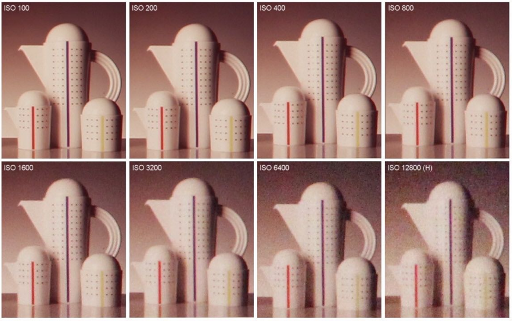
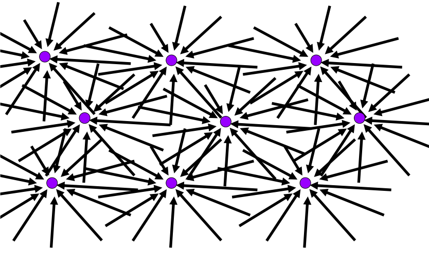
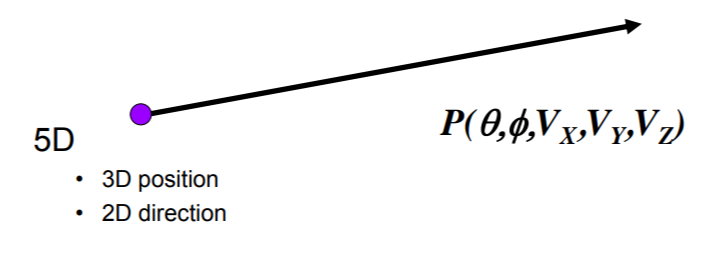

GAMES101课程笔记（八）——Cameras, Lenses and Light Fields
引言
相机、透镜与光场，今天的这个章节其实并不是图形学专属的主题，我们主要来谈谈成像相关的一些知识，比起图形学其实更偏向于物理学。内容总的来说还是挺基础的，就算没看过本系列之前的内容，应该也能够进行消化。
其实吧，咱们搞图形的，多学点物理挺好的，毕竟我们的目的是为了呈现出想象中的视觉效果，必然脱离不了这些知识（尤其是光学）。闲话也不多说，咱们直接进入今天的主题。
前文指路：
GAMES101课程笔记（一）——Transformation
GAMES101课程笔记（二）——Rasterization
GAMES101课程笔记（七）——Advanced Topics in Rendering
成像
此前的课程中，我们提到过光栅化成像和光线追踪成像，它们其实都属于同一种成像方法——合成。
成像的方法主要就是合成和捕捉，刚才说到的合成是指用一些本来不存在于自然界中的东西进行成像；相对地，捕捉指的就是将现实生活中存在的东西进行成像，最简单的例子就是用相机拍摄。
相机
那么我们就从相机开始，这里给出一个相机的剖面图：
可以看到相机内包含多个透镜和感光元件，接下来我们就来介绍一下相机的工作原理。
基本构造
虽然现在我们提到相机，会很自然地联想到其镜头上的透镜，但在更早以前，人们对成像的认知还是通过小孔：
基于这种原理的相机被称为针孔相机，如上图上，它假定对象上每一点会向小孔反射一条光线，最后这些光线在传感器上成像。不过针孔相机基本上已经被淘汰了，现在的相机大都基于上图下的这种透镜成像，原理这里就先不细究了。
在镜头之后，就是相机的快门了，这个部件是用来控制光进入感光元件的时间：
光线通过快门后，需要被捕捉才能成像，传感器就是这个用于捕捉的部件：
值得一提的是，传感器记录的物理量就是Irradiance，这也能解释为什么一定需要一个透镜（或者小孔），才能正常成像。
如上图所示，由于Irradiance记录各个方向上的能量，所以直接使用传感器的话，传感器上任一点都会收到对象上所有点反射的能量，导致无法成像。
不过小孔和透镜的原理并不一样，小孔是控制进入光线的数量（这么说并不严谨），理想情况下只留下一个点的光线；透镜是将进入光线的方向聚焦到一点，避免出现上图中的情况。
针孔相机
虽说针孔相机逐渐被淘汰了，但它依然是可以使用的，下图展示了一个用硬纸板制作的针孔相机：
这里再展示一张世界上最大的针孔相机照片：

针孔相机拍摄的照片并没有深度信息，其所有像素都是锐利的，没有现代相机的“虚化”效果，这个话题我们后面会具体说明。
Field of View（FOV）——视场
FOV——视场，是我们在聊到摄像时经常提到的一个名词，FOV代表了相机能拍摄到多大的范围，其定义式为：
其中$h$指的是传感器的长度（FOV一般会在水平和竖直两个方向上定义），$f$是相机的焦距，一般传感器的大小不会改变，所以在真实世界中，影响FOV的主要因素是相机的焦距，焦距越大，FOV越小：
一般我们购买相机时，看到的参数却并非FOV，而是只标注焦距，这会有一个问题：FOV需要胶片（传感器）大小和焦距二者决定，只给出焦距的情况下，我不就无法得知FOV了吗？
这里的焦距其实是“等效焦距”，由于历史原因，现在这种标注的焦距都是假设胶片大小为35mm下的等效焦距：
例如我们买手机的时候，看见手机摄像头参数为28mm，显然这是不现实的，手机总共就这么点厚度，根本塞不下这么大一个摄像头。
这是因为手机的传感器比较小，放到35mm胶片的等效焦距下，自然比实际焦距大很多。
以下是不同FOV下的拍摄效果：
Exposure——曝光
接下来我们介绍另外一个概念——曝光，其表达式如下：
其中曝光时间由快门决定，而Irradiance则会受到很多方面的影响，例如光圈、焦距等。
在真实摄影中，影响成像的因素主要有以下三点：
光圈大小：
光圈是仿照人的瞳孔进行设计的，目的在于控制光进入的多少，显然当光圈比较大时，Irradiance越大，反之越小。
快门速度：
快门的速度实际影响的是传感器接受光线的持续时间，持续时间越长，曝光度越高。
ISO（感光度）：
感光度用以修正传感器值到实际像素值的过程，可以是硬件实现也能是软件实现（例如放大几倍）。
这里展示不同参数组合下的照片效果：
接下来我们给出各个参数的“基本”介绍，注意，这里的介绍并不正确，只是简单地进行理解，后期我们会给出正确的原理。
光圈
光圈大小用F数（缩写为FN或者F/N）来进行表达，F数越大，光圈越小（这里的逗号是欧洲写法，代表的其实就是小数点）。当光圈很小时，相机就接近于针孔相机，照片的各个像素都会变得锐利；当光圈很大，照片上的某些深度区域就会出现虚化现象。
FN代表光圈大小的倒数，通过增大光圈，可以增加相同时间内的曝光度：
快门速度
快门速度直接用时间进行衡量，单位为秒。假设拍摄一个正在奔跑的人，用短时间的快门更容易捕获其某个时刻的动作，如果快门的时间过长，会导致传感器记录下对象这段时间内的运动，导致照片模糊。
不光是因为对象移动，即使是自己拍照时手抖也会出现这种问题，这被称之为运动模糊（Motion blur）：
但运动模糊不一定是坏事，因为在一张静态照片中，如果想要表达动感，就需要这种模糊，如下图：
明显感觉左图更有锤击的感觉，右图更像是锤子悬浮在半空。
之前我们聊到反走样时，用模糊来解决反走样的问题，如果把这里的运动理解为在时间维度上采样，那运动模糊的使用其实和解决反走样的思路是非常相似的。
另外快门还有一个问题——Rolling shutter。当物体的运动速度极快时，每个像素上采集到的不一定是同一时刻的光照，从而导致照片出现扭曲，如下图中飞机的螺旋桨：
ISO
ISO的话，我们就暂且理解为将像素值按照对应比例放大，例如200就是在100的基础上再翻一倍。增大ISO可以增加照片的亮度，但同时也会使得信号里的噪点更加明显，出现预期之外的成像（变得更加noisy）。

光圈与快门
从之前的内容来看，如果我们因为拍摄需求不得不调整参数，例如为了拍摄一张静态照片，必须使用很短的快门时间，会导致曝光度的下降。为了解决这个问题，可以调整光圈的大小，使得单位时间进入的光照更多，从曝光度的计算式来看，这其实是令光圈和快门达到了一种平衡。（不过严格来说，并非简单相乘）
上图中的这些参数组合，最后拍摄出来的曝光度都是差不多的，在现实中，这种技巧非常有用，两个代表例子就是高速摄影和低速摄影。
高速摄影
高速摄像用于拍摄运动物体某些时刻的样子，因此快门时间非常短，此时就需要调大光圈，维持曝光度：
低速摄影
低速摄影的光圈非常小，但有很长的快门时间，可以记录下物体的运动轨迹，也被称为“延时摄影”：
薄透镜近似
目前市面上的相机都不是用简单的一个透镜来做镜头，一般都是使用一个透镜组，结构非常复杂：
另外还有一些奇怪的透镜，它们并不能把平行光聚于一点，这种情况被称为Aberration：
这里我们先讨论我们理想中的透镜。
焦点
在理想薄透镜中，平行光穿过透镜后，最终会聚集到一点上：

这一点被称之为焦点，而焦点到透镜中心的距离就是焦距。
由于光路是可逆的，因此理想薄透镜还有另一个性质：从焦点处射出的光线经过透镜后，会变成平行光。
另外再补充一条性质：穿过透镜中心的光线，方向不会发生改变。
总结一下：
- 平行光经过透镜后，会聚集到焦点。
- 从焦点处射出的光线经过透镜后，会变成平行光。
- 穿过透镜中心的光线，方向不会发生改变。
除了上述三条性质，在以下的讨论中，我们认为透镜的焦距是可以调整的。这其实是现代摄像机使用透镜组的一个好处，通过不同透镜间的排列组合，能够调整整个镜头的焦距。
薄透镜公式
假设我们有这样一个场景：
左侧箭头代表物体，右侧箭头代表成像，其中物体到透镜的距离为$z_0$，这个距离称为物距；成像到透镜的距离为$z_i$，这个距离称为像距。
初中物理课上我们应该都学过，焦距、物距和相距满足：
这个公式的推理其实并不复杂，其实就是借助于两对相似三角形：
通过蓝色和红色的两对相似三角形，我们可以获得两组等式：
经过一些简单的代换和变形，就能获得上述公式，这里就直接贴一张推导的过程图在这里了：
Defocus Blur——散焦模糊
考虑这样一个场景，我们有一个很小的点物体，它反射的光线经过透镜后聚集在一点上（使用上述公式），但我的传感器平面却不在这个距离上，而是比像距更远，如下图所示：
此时由该点反射的光线分散到了一片区域（圆形）上，这个区域被称之为Circle of Confusion（CoC），同样使用相似三角形性质，有：
当各个距离都维持不变时，CoC的大小和光圈直径$A$成正比，由于一点的光线被分散，最终的照片上会出现模糊，这就是散焦模糊。
下图中印证了这一点，大光圈中，散焦模糊会更加明显：
到这里我们可以来正确定义一下光圈F数的含义了，F数的正确定义是焦距和光圈直径的比值，即：
从而有：
因此F数越大，整个图像就更加锐利：
使用透镜的光线追踪
回想之前我们介绍的光线追踪算法，其实默认都使用的是小孔成像的原理，我们可以将刚才的透镜引入，渲染出下图这样的效果：
为了实现这个目标，我们自然需要定义很多属性，这里给出一种定义方式：
- 选定传感器大小，透镜焦距和光圈大小
- 选定兴趣平面的位置$z_0$（就是要着重拍摄的距离）
- 运用薄透镜公式，计算出传感器到透镜的距离$z_i$
具体的渲染过程为：
- 对于传感器上的每一点$x’$：
- 在透镜平面上随机采样一点$x’’$
- 假设有光线$x’x’’$，可以计算出该光线会被折射到兴趣平面上一点$x’’’$
- 估计光线$x’’x’’’$上的Irradiance
景深
我们之前提到过，光圈的大小会影响模糊的范围，现在我们来具体探讨一下这个问题：
其实就是在聚焦的过程中，理想焦点前后的一小块区域内，CoC的面积非常小，因而这部分图像的清晰度会很高：
而这部分区域对应的，真实世界中的物体到相机的距离，就被称之为景深，接下来我们来看看景深如何计算：
上图左侧这片区域对应的距离就是景深，右侧对应的就是CoC很小的那块区域。
这张图看上去很复杂，其实用到的无非还是之前的公式，列出右边六条公式后简单解一下，就可以得到景深（DOF）的公式。
Light Field/Lumigraph——光场
光场，对应的英文名有Light Field和Lumigraph两个，这属于历史遗留问题，我们就不再纠结这个问题。
在说明光场之前，我们先想象这样一个普通的场景：我们坐在椅子上观察这个世界，最终形成了一副二维的图像。
现在我们在这个过程中改动一点点：我们在房间中拉上一块幕布，但这块幕布严格地将之前的光线复刻，那在我们眼中的图像，看上去就像没发生任何变化一样。
（这其实就是虚拟现实的原理）
全光函数
这里我们提出一个概念——全光函数，它用以描述我们可以看到的所有东西的集合。
现在这个描述听上去非常抽象，接下来我们从最简单的全光函数开始，一层层理解。
由于需要描述空间中观察任何角度时的信息，全光函数一定会有角度作为参数，告诉我们向某个方向观测时，获取到的值：
由于只有一个值，所以此时的全光函数只能描述灰度。
为了加入颜色，我们可以再引入一个参数——波长，表示该方向上特定波长光的值：
这样，全光函数就包含了颜色信息。
接着我们考虑时间维度，为了能包含所有东西，自然要加上一个时间参数：
最后，我们让观测者可以在空间中任何一地方，在函数中加上观测者的位置参数：
现在这个函数涵盖了所有空间和时间，真的可以描述我们可以看到的所有东西，这便是全光函数。
全光函数的示意图如下，不过要注意的是，全光函数是连续值，而下图中只绘制了部分，因此看上去是离散的：

而我们要介绍的光场，就是全光函数中的一个部分。
光场
正式定义光场之前，我们要先定义光线，回忆我们定义过的光线，当时我们是这么做的：

即使用一个起点（3维）和一个方向（2维）来定义一条光线，这里使用了5个维度。
不过在光场这个背景下，我们只需要一个点（2维）和一个方向（2维）就可以定义一条光线：
这样就只需要4个维度，接下来我们解释为什么。
假设我们要描述一个物体，我们只需要描述从任何角度看向该物体的信息，根据光路的可逆性，这就等同于描述物体向所有方向放射出的光照信息：
于这些信息就是我们的主角——光场，光场被定义为：在任何一个位置，向任何一个方向放出的光的强度。
根据前面的知识，我们知道，物体的包围盒可以展开为二维表面，因此可以用二维坐标来表示包围盒上任意一点，因此在光场背景下，我们只需要4个维度描述光线。
有了光场，我们可以从任何角度观察物体，通过光场获得对应的光照强度，从而进行渲染：
此时，物体本身的形状并不是必须的，就像本节最开始举的例子一样，我们完全可以使用一个“幕布”，在上面复刻光场信息，这也就做到了用四维描述该物体的所有光照信息：
此时我们使用坐标+方向的方式来定义光线，相当于使用了一个附加了角度的平面来定义光场：
我们知道，方向其实是可以用两点来表示的，所以还可以用两个平面来定义光场：
这样就把在平面上任意一点的任意方向，转化为了在两个平面上各取一点，因此次平时描述光场时，往往使用$(u,v)$加上$(s,t)$的方式：
我们可以从两个角度来理解这种双平面的表达方式，如下所示：
上半表示固定$(u,v)$，观察整个$st$平面，这样每个$(u,v)$坐标都相当于一个针孔相机，看见的是从不同角度观察到的完整场景。
下半表示固定$(s,t)$，从$uv$平面上任意点观察该点，这样其实是获得了从所有角度观察点$(s,t)$的情况，也就是该像素上不同角度的Radiance。
斯坦福大学就依据光场原理搭建了一个相机矩阵：
通过该相机矩阵，可以大致还原一个场景的所有光照信息。
不过在生物界中，本身就有光场原理的完美应用——复眼：
假设我们有来自三个方向的光，也就是图中的蓝绿红光（注意，这里不代表光的颜色，只是为了区分光的颜色）。在复眼的每个晶状体上，并没有简单地将三个方向上的光进行简单的叠加，而是将其“分”到了不同的位置上，这样就保留下了角度信息。
用我们之前的知识来说，就是此时，记录下的信息不再是Irradiance，而是Radiance。
光场相机
光场相机和复眼的原理非常像，由于它能记录下Radiance信息，所以可以实现先拍照、再调整的效果。
在课程PPT中给了一个例子，但由于图片数量有点多，不方便在博客中展示，这里就贴出链接：
GAMES101_Lecture_20 (ucsb.edu)
（主要就是拍摄完后，可以调整聚焦平面的位置，达到自己想要的成像效果）
以下是光场相机的结构，不难发现和复眼真的非常类似：
原先我们只在像素上存储光线强度的叠加，而在光场相机中，用微透镜替代像素，进行了分光操作，此时像素拓展为一个区域，区域内的各个像素记录了不同角度的Radiance。
当我们想要获得正常的相片时，只需要在每个区域内，获取特定方向的Radiance，每个Radiance占据一像素，重新组合为相片即可：
由于光场相机本质上就是记录了光场，自然也可以实现重新聚焦的过程，不过这里就不详细展开了。
不过光场相机也有如下几个缺点：
- 分辨率不足。由于用区域来记录原来一个像素的信息，使用分辨率相同的胶片，分辨率会较低。
- 高成本。一是由于分辨率问题，要采用分辨率更高的胶片才能达到原先的效果；二是微透镜的制作成本更高。
这些问题其实和在编程时，我们遇到的空间和时间之间的抉择是类似，整个图形学其实就是一个trade-off的过程。
好了，本篇文章就此结束，真是一篇很好的摄影入门教程啊（雾）。